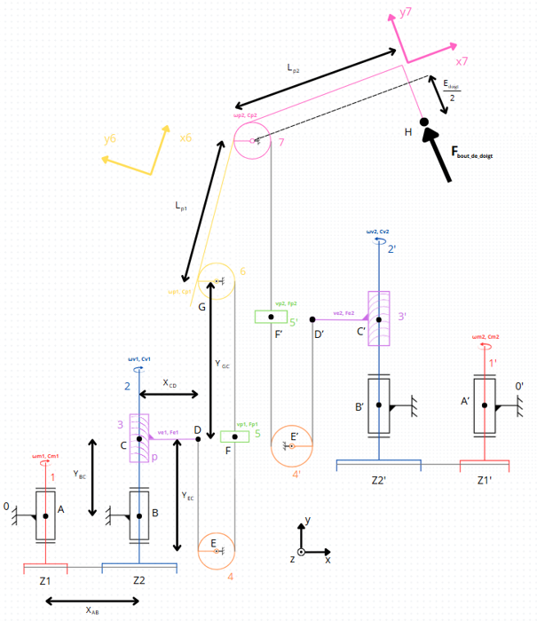
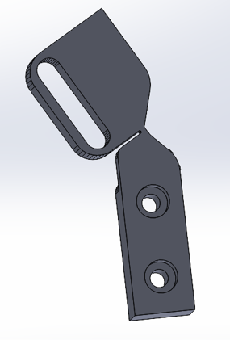
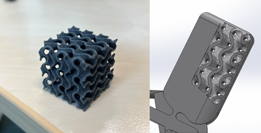
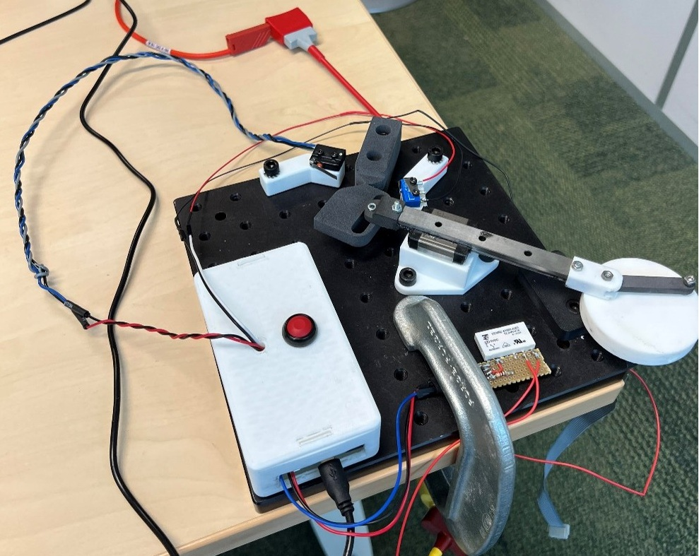

Préhenseur TraceBot & Mécanismes Compliants

1. Le Challenge : La Transparence Mécanique
Dans le cadre du projet européen TraceBot, l'objectif principal était de reconcevoir un doigt robotique actionné par câble en exploitant les nouveaux procédés d'impression 3D. Le but : alléger le système, réduire le nombre de pièces et simplifier l'assemblage.
La contrainte majeure était de conserver une "transparence mécanique" parfaite. En robotique, cela signifie piloter le système en boucle ouverte (sans capteurs d'efforts externes) tout en étant capable de "lire" les efforts extérieurs subis par le doigt directement via le moteur. Cela exige une réduction drastique des frottements, des jeux d'assemblage et de l'inertie.

2. L'Innovation : Les Mécanismes Compliants

Pour éliminer les frottements et les jeux inhérents aux roulements et aux axes traditionnels, j'ai pris la décision de supprimer les liaisons pivots classiques pour les remplacer par des mécanismes compliants (soft-robotic).
Imprimées en TPU souple, ces zones amincies se comportent comme des pseudo-liaisons pivots. Cette solution apporte un double avantage :
- Fabrication monobloc : Assemblage simplifié et chute du poids.
- Rappel élastique naturel : Les câbles ne servent qu'à piloter la fermeture (flexion) des phalanges. Le retour en position ouverte est géré passivement par l'élasticité du TPU, supprimant ainsi la nécessité d'un système complexe de précharge des câbles.
3. Intelligence Matière : Structure Gyroïde
La dernière phalange (qui est cinématiquement sous-actionnée par la seconde avec un rapport de 2/3) doit pouvoir épouser la forme des objets saisis sans nécessiter un contrôle actif complexe.
Pour optimiser ce "grip", j'ai intégré directement dans la masse du doigt une structure en Lattice basée sur une équation mathématique minimale : le Gyroïde.
La particularité topologique de cette structure, une fois imprimée en 3D (SLS), est d'être quasi-isotrope. Elle se déforme de manière parfaitement homogène peu importe la direction de l'effort qui lui est appliqué, agissant comme une mousse adaptative intelligente à la densité contrôlée.

4. Transmission & Validation par Banc d'Essai
Afin de valider la viabilité industrielle de ces articulations imprimées en TPU, j'ai conçu, usiné et programmé (en C++ sur Arduino) un banc d'essai dynamique. Ce système bielle-manivelle permettait d'imposer des flexions répétées tout en enregistrant les données sur la mémoire EEPROM pour éviter la perte de données lors d'essais longs.
Résultat : L'articulation compliante a validé avec succès plus de 100 000 cycles de flexion sans rupture structurelle, prouvant la robustesse de cette solution pour une application robotique durable.
